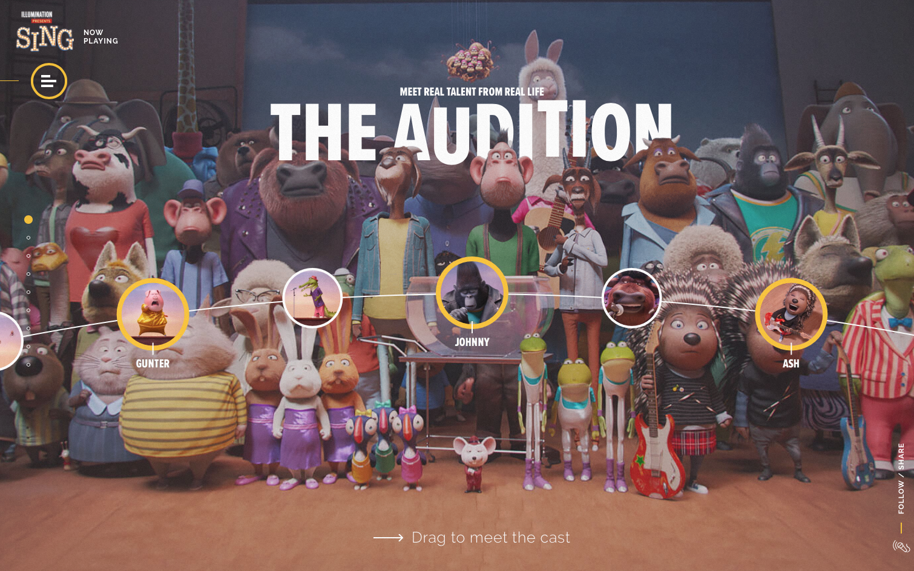
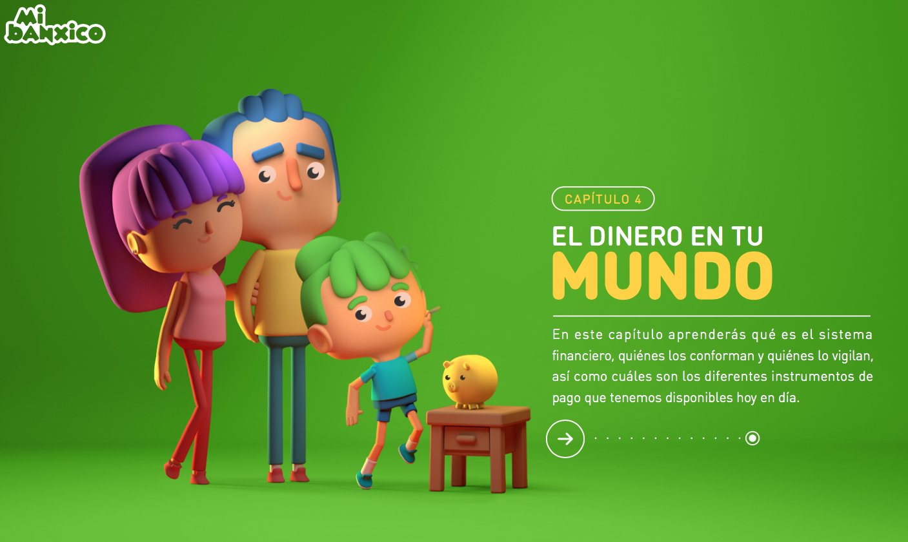

Week 2 - February 8, 2017

One of my favorite animation movie last year, Cant stop thinking about Gunter's dance move after watching it. Sing is a 2016 American 3D computer-animated musical comedy film produced by Illumination Entertainment.It was directed and written by Garth Jennings and co-directed by Christophe Lourdelet.
Sing

An interactive colorful site where young people can learn about financial education, through different important chapters of the history of money and banking system.
Mi Banxico